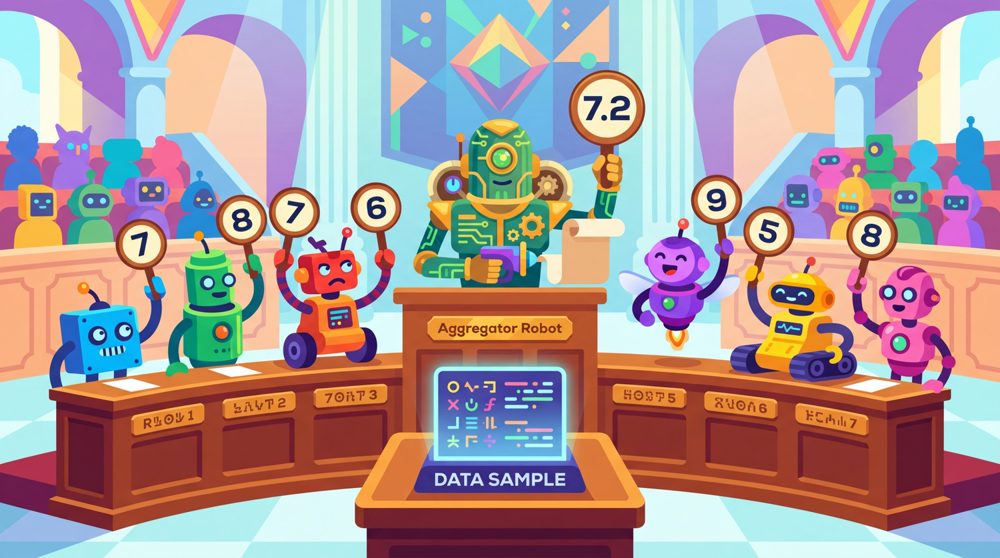

"One noisy labeling function is a liability. Twenty noisy labeling functions, properly aggregated, are a dataset."
Synth, Ensemble-Minded AI Agent
Replace hand-labeling with programming. Weak supervision flips the traditional annotation paradigm: instead of labeling examples one at a time, you write labeling functions that encode heuristics, patterns, and domain knowledge as code. Each function is noisy and incomplete on its own, but a label aggregation model combines their outputs into probabilistic labels that approach human quality. When combined with LLM-generated labels as an additional signal source, weak supervision creates a powerful, scalable, and maintainable labeling system. This section covers the Snorkel paradigm, practical labeling function design, aggregation models, and cost-quality tradeoff analysis. The hybrid ML/LLM decision framework from Section 13.1 helps determine when weak supervision is preferable to full LLM labeling.
Prerequisites
Before starting, make sure you are familiar with synthetic data concepts as covered in Section 14.1: Principles of Synthetic Data Generation.

14.5.1 Weak Supervision Fundamentals
Traditional supervised learning requires a clean, fully labeled training set. Weak supervision relaxes this requirement by accepting noisy, partial, and potentially conflicting labels from multiple imperfect sources. The core insight is that while any single labeling heuristic is unreliable, the collective signal from many independent heuristics can produce high quality labels when aggregated properly.
The Snorkel paper demonstrated that a team of PhD students writing labeling functions for an afternoon could produce training data competitive with months of expert annotation. This discovery did not make annotators obsolete, but it did give researchers a new party trick: "I labeled 100,000 examples today." "Impressive! How many did you look at?" "About twelve."
The label aggregation model assumes that labeling functions provide independent signals. When multiple labeling functions are correlated (e.g., several keyword-based functions that trigger on similar vocabulary), the model overestimates its confidence in labels where those functions agree. This leads to systematically overconfident probabilistic labels for certain subsets of data. Always check for correlations between labeling functions using pairwise agreement statistics, and either remove redundant functions or explicitly model their dependencies in the label model.
14.5.1.1 The Snorkel Paradigm
The Snorkel framework, developed at Stanford, formalized weak supervision into a three-stage pipeline: (1) write labeling functions that encode heuristics, (2) train a label model that learns the accuracy and correlation structure of these functions, and (3) use the resulting probabilistic labels to train a downstream classifier. This approach has been adopted widely in industry, powering labeling systems at Google, Apple, Intel, and many startups. shows this paradigm.
Think of weak supervision as a committee of imperfect voters. Each labeling function is a voter with a strong opinion about one narrow topic but no knowledge about others. One voter might label any email containing 'invoice' as spam; another checks sender reputation. The label model aggregates their noisy votes into a single probabilistic label that is more reliable than any individual voter. The power comes from combining many cheap, imperfect signals rather than relying on one expensive, perfect one.
The label model in Snorkel does not simply take a majority vote. It learns a generative model of how each labeling function relates to the true (unobserved) label, accounting for the fact that some functions are more accurate than others and that some pairs of functions are correlated (for example, two keyword-based functions may make the same mistakes on the same examples). This produces better labels than naive majority voting, typically improving accuracy by 5 to 15 percentage points.
14.5.2 Writing Labeling Functions
A labeling function (LF) takes an example as input and returns either a label or an abstain signal. Good labeling functions are narrow and precise: they should have high accuracy on the examples they label, even if they abstain on most of the dataset. A function that labels only 5% of examples but is 95% accurate is more valuable than one that labels everything at 60% accuracy. Code Fragment 14.5.2 shows this in practice.
14.5.2.1 Types of Labeling Functions
| Type | Approach | Typical Accuracy | Typical Coverage | Example |
|---|---|---|---|---|
| Keyword | Check for specific words/phrases | 80-95% | 5-20% | "refund" in text implies complaint |
| Pattern/Regex | Match structural patterns | 85-95% | 3-15% | Email regex for contact detection |
| Heuristic | Domain-specific rules | 70-90% | 10-40% | Length > 500 chars implies detailed review |
| External KB | Lookup in knowledge base | 90-99% | 5-30% | Company name in CRM implies B2B |
| Model-based | Small classifier or LLM | 75-90% | 60-100% | Sentiment classifier output |
| LLM | LLM zero/few-shot classification | 80-92% | 90-100% | GPT-4o-mini topic classification |
Code Fragment 14.5.2 shows the RLHF loop.
# Apply privacy and governance checks to the synthetic dataset
# Remove PII, check for bias, and document provenance
import re
from enum import IntEnum
# Define label space
class Sentiment(IntEnum):
ABSTAIN = -1
NEGATIVE = 0
NEUTRAL = 1
POSITIVE = 2
# ---- Keyword-based labeling functions ----
def lf_positive_keywords(text: str) -> int:
"""Label as positive if strong positive keywords present."""
positive_words = {"excellent", "amazing", "love", "fantastic",
"outstanding", "perfect", "wonderful", "great"}
words = set(text.lower().split())
if words & positive_words:
return Sentiment.POSITIVE
return Sentiment.ABSTAIN
def lf_negative_keywords(text: str) -> int:
"""Label as negative if strong negative keywords present."""
negative_words = {"terrible", "awful", "horrible", "worst",
"waste", "broken", "useless", "disappointed"}
words = set(text.lower().split())
if words & negative_words:
return Sentiment.NEGATIVE
return Sentiment.ABSTAIN
# ---- Pattern-based labeling functions ----
def lf_exclamation_positive(text: str) -> int:
"""Exclamation marks with positive context suggest positive."""
if re.search(r"!\s*$", text) and any(
w in text.lower() for w in ["recommend", "love", "best"]
):
return Sentiment.POSITIVE
return Sentiment.ABSTAIN
def lf_question_neutral(text: str) -> int:
"""Questions without strong sentiment are often neutral."""
if text.strip().endswith("?") and not any(
w in text.lower()
for w in ["terrible", "amazing", "worst", "best"]
):
return Sentiment.NEUTRAL
return Sentiment.ABSTAIN
# ---- Heuristic labeling functions ----
def lf_short_negative(text: str) -> int:
"""Very short reviews tend to be negative complaints."""
if len(text.split()) < 8 and any(
w in text.lower() for w in ["bad", "no", "not", "don't"]
):
return Sentiment.NEGATIVE
return Sentiment.ABSTAIN
def lf_star_rating(text: str) -> int:
"""Extract star ratings mentioned in text."""
match = re.search(r"(\d)\s*(?:out of 5|/5|stars?)", text.lower())
if match:
stars = int(match.group(1))
if stars >= 4:
return Sentiment.POSITIVE
elif stars <= 2:
return Sentiment.NEGATIVE
else:
return Sentiment.NEUTRAL
return Sentiment.ABSTAIN
# Collect all labeling functions
LABELING_FUNCTIONS = [
lf_positive_keywords,
lf_negative_keywords,
lf_exclamation_positive,
lf_question_neutral,
lf_short_negative,
lf_star_rating,
]
# Apply to sample data
sample_texts = [
"This product is amazing! Highly recommend it!",
"Worst purchase ever. Complete waste of money.",
"It works okay. Nothing special.",
"Is this compatible with iPhone?",
"4 out of 5 stars. Good value for the price.",
"Bad. Don't buy.",
]
print(f"{'Text':<50} ", end="")
for lf in LABELING_FUNCTIONS:
print(f"{lf.__name__[3:12]:>12}", end="")
print()
print("-" * 122)
for text in sample_texts:
print(f"{text[:50]:<50} ", end="")
for lf in LABELING_FUNCTIONS:
result = lf(text)
label = {-1: ".", 0: "NEG", 1: "NEU", 2: "POS"}[result]
print(f"{label:>12}", end="")
print()
Code Fragment 14.5.2 aggregates these noisy, overlapping votes into a single label per example. It implements two strategies: plain majority vote (baseline) and accuracy-weighted vote, where each labeling function's contribution is scaled by its estimated precision on a small gold set.
# Measure dataset diversity using embedding-based metrics
# Higher diversity in the training set improves model generalization
import numpy as np
from typing import Optional
def majority_vote(
label_matrix: np.ndarray,
abstain_value: int = -1
) -> np.ndarray:
"""Simple majority vote aggregation (baseline)."""
n_examples = label_matrix.shape[0]
labels = np.full(n_examples, abstain_value)
for i in range(n_examples):
votes = label_matrix[i][label_matrix[i] != abstain_value]
if len(votes) > 0:
values, counts = np.unique(votes, return_counts=True)
labels[i] = values[np.argmax(counts)]
return labels
def weighted_vote(
label_matrix: np.ndarray,
accuracies: np.ndarray,
abstain_value: int = -1,
n_classes: int = 3
) -> np.ndarray:
"""Accuracy-weighted vote aggregation."""
n_examples = label_matrix.shape[0]
probs = np.zeros((n_examples, n_classes))
for i in range(n_examples):
for j in range(label_matrix.shape[1]):
vote = label_matrix[i, j]
if vote != abstain_value:
# Weight by estimated accuracy
probs[i, int(vote)] += accuracies[j]
# Normalize to probabilities
total = probs[i].sum()
if total > 0:
probs[i] /= total
else:
probs[i] = 1.0 / n_classes # Uniform if no votes
return probs
def estimate_lf_accuracies(
label_matrix: np.ndarray,
gold_labels: np.ndarray,
abstain_value: int = -1
) -> np.ndarray:
"""Estimate labeling function accuracies from a small gold set."""
n_lfs = label_matrix.shape[1]
accuracies = np.zeros(n_lfs)
for j in range(n_lfs):
mask = label_matrix[:, j] != abstain_value
if mask.sum() > 0:
correct = (label_matrix[mask, j] == gold_labels[mask]).sum()
accuracies[j] = correct / mask.sum()
else:
accuracies[j] = 0.5 # Default for unused LFs
return accuracies
# Example: Build and aggregate a label matrix
np.random.seed(42)
n_examples, n_lfs = 100, 6
# Simulate label matrix (lots of abstains, marked as -1)
label_matrix = np.full((n_examples, n_lfs), -1)
true_labels = np.random.choice([0, 1, 2], n_examples)
# Each LF has different coverage and accuracy
lf_configs = [
{"coverage": 0.15, "accuracy": 0.92}, # Keyword, high precision
{"coverage": 0.12, "accuracy": 0.90}, # Pattern
{"coverage": 0.25, "accuracy": 0.78}, # Heuristic
{"coverage": 0.10, "accuracy": 0.95}, # External KB
{"coverage": 0.70, "accuracy": 0.75}, # Small model
{"coverage": 0.90, "accuracy": 0.82}, # LLM classifier
]
for j, cfg in enumerate(lf_configs):
for i in range(n_examples):
if np.random.random() < cfg["coverage"]:
if np.random.random() < cfg["accuracy"]:
label_matrix[i, j] = true_labels[i]
else:
label_matrix[i, j] = np.random.choice(
[l for l in [0, 1, 2] if l != true_labels[i]]
)
# Compare aggregation methods
mv_labels = majority_vote(label_matrix)
labeled_mask = mv_labels != -1
mv_accuracy = (mv_labels[labeled_mask] == true_labels[labeled_mask]).mean()
# Estimate accuracies from small gold set (first 20 examples)
gold_size = 20
est_accuracies = estimate_lf_accuracies(
label_matrix[:gold_size], true_labels[:gold_size]
)
wv_probs = weighted_vote(label_matrix, est_accuracies)
wv_labels = wv_probs.argmax(axis=1)
wv_accuracy = (wv_labels == true_labels).mean()
print(f"Majority vote accuracy: {mv_accuracy:.1%} "
f"(coverage: {labeled_mask.mean():.1%})")
print(f"Weighted vote accuracy: {wv_accuracy:.1%} (coverage: 100%)")
print(f"\nEstimated LF accuracies:")
for j, (cfg, est) in enumerate(zip(lf_configs, est_accuracies)):
print(f" LF{j+1}: true={cfg['accuracy']:.2f}, "
f"estimated={est:.2f}, coverage={cfg['coverage']:.0%}")Code Fragment 14.5.3 tracks API costs.
# Define a data governance record for tracking synthetic data provenance
# Each record logs the generation model, filters applied, and license terms
from dataclasses import dataclass
@dataclass
class LabelingStrategy:
name: str
cost_per_10k: float # In dollars
accuracy: float # 0-1
time_days: float # Days to label 10K examples
maintainability: str # "low", "medium", "high"
def compare_strategies(
strategies: list[LabelingStrategy],
dataset_size: int = 50000,
accuracy_threshold: float = 0.85,
budget: float = 5000,
deadline_days: float = 14
) -> list[dict]:
"""Evaluate labeling strategies against constraints."""
results = []
for s in strategies:
scale_factor = dataset_size / 10000
total_cost = s.cost_per_10k * scale_factor
total_time = s.time_days * scale_factor
feasible = (
s.accuracy >= accuracy_threshold and
total_cost <= budget and
total_time <= deadline_days
)
# Value metric: accuracy per dollar
value = s.accuracy / max(total_cost, 1)
results.append({
"name": s.name,
"total_cost": f"${total_cost:,.0f}",
"accuracy": f"{s.accuracy:.0%}",
"total_days": f"{total_time:.1f}",
"feasible": feasible,
"value_score": round(value * 1000, 2)
})
# Sort by value (feasible first)
results.sort(key=lambda r: (not r["feasible"], -r["value_score"]))
return results
strategies = [
LabelingStrategy("Expert", 30000, 0.95, 28, "low"),
LabelingStrategy("Crowd", 3000, 0.85, 10, "low"),
LabelingStrategy("LLM-only", 100, 0.84, 0.2, "medium"),
LabelingStrategy("LLM+Human", 1500, 0.91, 5, "medium"),
LabelingStrategy("Weak Supervision", 200, 0.82, 2, "high"),
LabelingStrategy("Hybrid WS+LLM", 400, 0.88, 2, "high"),
]
results = compare_strategies(
strategies,
dataset_size=50000,
accuracy_threshold=0.85,
budget=10000,
deadline_days=14
)
print(f"{'Strategy':<20} {'Cost':<12} {'Accuracy':<10} {'Days':<8} "
f"{'Feasible':<10} {'Value'}")
print("-" * 72)
for r in results:
print(f"{r['name']:<20} {r['total_cost']:<12} {r['accuracy']:<10} "
f"{r['total_days']:<8} {'YES' if r['feasible'] else 'no':<10} "
f"{r['value_score']}")
Show Answer
Show Answer
Show Answer
Show Answer
Show Answer
Why this matters: Weak supervision bridges the gap between fully manual annotation and fully synthetic generation. In production settings, you often have domain-specific heuristics (keyword patterns, metadata signals, existing business rules) that capture partial labeling signal. The label model's job is to combine these noisy, overlapping signals into probabilistic labels that are good enough for training. This is especially valuable when you need to label millions of examples for classification fine-tuning tasks.
- Weak supervision replaces hand-labeling with programming. Write labeling functions that encode heuristics, then use a label model to aggregate their noisy votes into probabilistic labels that approach human quality.
- Good labeling functions are narrow and precise. High accuracy on a small subset is more valuable than moderate accuracy on everything. Use abstain liberally for uncertain cases.
- Six types of labeling functions provide complementary signals: keyword, pattern/regex, heuristic, external knowledge base, model-based, and LLM-based. Diversity of function types is critical.
- The Snorkel label model outperforms majority voting by 5 to 15 points because it learns function accuracies and correlation structure rather than treating all votes equally.
- LLM labels are a powerful labeling function with uniquely high coverage but correlated errors. Combining LLMs with traditional labeling functions in a weak supervision framework outperforms either approach alone.
- Optimize for iteration speed, not single-round accuracy. Cheaper, faster labeling approaches that enable rapid iteration often produce better final models than expensive one-shot labeling campaigns.
Snorkel, the framework that popularized programmatic labeling, was named after the idea of getting a shallow, noisy view of the data rather than a deep dive. The metaphor works: you see enough to navigate, but not enough to write a marine biology thesis.
Who: A product team at a CRM company building an automated email routing system that classifies incoming customer emails into 8 intent categories (billing inquiry, feature request, bug report, cancellation, upgrade, general question, spam, partnership).
Situation: They had 200,000 unlabeled customer emails and only 500 manually labeled examples. Labeling at scale was impractical because the emails contained sensitive customer data that could not be shared with external annotators.
Problem: A classifier trained on 500 examples achieved only 61% accuracy. An LLM-based classifier reached 79% but cost \$0.02 per email, totaling \$4,000/month at their volume, and introduced unacceptable latency (2 seconds per classification) for real-time routing.
Dilemma: They could label more data internally (slow, diverts engineering time), rely on the LLM classifier in production (expensive, slow), or use weak supervision to combine the LLM with cheaper heuristic signals to generate training data for a fast, cheap model.
Decision: They built a Snorkel-based weak supervision pipeline with 22 labeling functions: 8 keyword-based rules, 4 regex patterns (for billing amounts, error codes, cancellation phrases), 3 sender-domain heuristics, 2 subject-line classifiers, and 5 LLM-based labeling functions (one per ambiguous category, using GPT-4o-mini).
How: Each labeling function voted on a subset of examples (coverage ranged from 5% to 60%). The Snorkel label model learned function accuracies and correlations, producing probabilistic labels for 85% of the 200,000 emails. They trained a DistilBERT classifier on these probabilistic labels using soft softmax loss.
Result: The DistilBERT model achieved 84% accuracy (beating the LLM-only 79% because the weak supervision framework captured signals from multiple complementary sources). Inference cost was essentially zero (\$12/month for GPU hosting), latency was 5ms per email, and the total labeling pipeline cost \$800 in LLM API fees (the LLM functions ran on a 20,000-email sample, not the full set).
Lesson: Weak supervision with diverse labeling function types (keywords, patterns, LLM judgments) outperforms any single source because the label model learns to weight each source by its actual accuracy on different subsets of the data.
The integration of LLMs as labeling functions within frameworks like Snorkel is creating hybrid systems that combine programmatic rules with natural language reasoning. Research on zero-shot weak supervision uses LLM prompts as labeling functions without any labeled examples, potentially eliminating the need for manual labeling function design.
An unresolved question is how to model the error correlations between LLM-based labeling functions, since traditional weak supervision theory assumes conditionally independent noise sources.
Exercises
Explain what weak supervision is and how it differs from traditional supervised learning. What role do labeling functions play?
Answer Sketch
Traditional supervised learning requires hand-labeled examples with high accuracy. Weak supervision uses noisy, approximate labeling sources (heuristics, pattern matching, knowledge bases, LLMs) called labeling functions, each of which may be inaccurate or have limited coverage. A label model then combines these noisy signals, estimating their accuracies and correlations, to produce probabilistic training labels. This eliminates the manual labeling bottleneck.
Write three Snorkel-style labeling functions for classifying emails as spam or not-spam: one based on keywords, one based on sender patterns, and one using an LLM call.
Answer Sketch
Keyword LF: def lf_spam_keywords(x): return SPAM if any(w in x.text.lower() for w in ['free money','act now','click here']) else ABSTAIN. Sender LF: def lf_suspicious_sender(x): return SPAM if re.search(r'\d{5,}@', x.sender) else ABSTAIN. LLM LF: def lf_llm_classifier(x): resp = llm.classify(x.text); return SPAM if resp == 'spam' else NOT_SPAM if resp == 'not_spam' else ABSTAIN. Each returns ABSTAIN when uncertain.
Explain how Snorkel's label model combines multiple noisy labeling functions into a single set of probabilistic labels. Why is this better than simple majority voting?
Answer Sketch
The label model estimates each labeling function's accuracy, coverage, and correlations with other functions using an unsupervised generative model. It then weights each function's votes accordingly. This is better than majority voting because: (1) it accounts for different accuracies (a 95%-accurate function gets more weight than a 60%-accurate one), (2) it handles correlated functions (two functions that always agree should not count as two independent votes), and (3) it outputs probabilistic labels that convey uncertainty.
Compare using an LLM as a single labeling function in a weak supervision framework versus using it as the sole labeler. In what scenarios does the weak supervision approach provide better results?
Answer Sketch
Weak supervision is better when: (1) the LLM has systematic blind spots that rule-based functions can catch (e.g., the LLM misses domain jargon that a keyword function handles), (2) cost matters (LLM functions can cover only uncertain examples while cheap heuristics handle obvious cases), (3) you have domain knowledge expressible as rules. The sole-labeler approach is simpler but vulnerable to the LLM's systematic errors. Weak supervision provides error correction through function disagreement.
Write a complete Snorkel pipeline: define 4 labeling functions, apply them to a dataset, train a label model, and generate probabilistic labels. Use the snorkel library.
Answer Sketch
Define 4 LFs with the @labeling_function() decorator. Apply: applier = PandasLFApplier(lfs); L_train = applier.apply(df_train). Analyze: LFAnalysis(L_train, lfs).lf_summary() to check coverage and overlap. Train: label_model = LabelModel(cardinality=2); label_model.fit(L_train). Predict: probs = label_model.predict_proba(L_train). Filter low-confidence: keep examples where max probability > 0.7.
What Comes Next
In the next section, Section 14.6: Synthetic Reasoning Data, we explore how to generate chain-of-thought traces and verification-filtered reasoning datasets. The weak supervision and programmatic labeling concepts here also connect to the evaluation metrics.
Ratner, A. et al. (2017). Snorkel: Rapid Training Data Creation with Weak Supervision. VLDB 2017.
The foundational Snorkel paper that introduced the labeling function paradigm and probabilistic label aggregation model. This is the theoretical backbone of the entire weak supervision approach covered in this section. Required reading for understanding how noisy labeling functions combine into high-quality training labels.
Ratner, A. et al. (2019). Training Complex Models with Multi-Task Weak Supervision. AAAI 2019.
Extends Snorkel to multi-task settings where labeling functions can inform multiple related tasks simultaneously. The multi-task extension is relevant for teams building labeling pipelines that need to annotate several attributes per example. Valuable for understanding how weak supervision scales to complex annotation schemas.
Zhang, J. et al. (2022). A Survey on Programmatic Weak Supervision.
A comprehensive survey covering labeling function design patterns, noise-aware aggregation models, and downstream training strategies. This provides the broader context for the specific techniques presented in this section. Ideal for readers who want to understand the full landscape of weak supervision approaches.
Explores how to incorporate human expert feedback into LLM-based labeling loops, creating a virtuous cycle where expert corrections improve LLM labeling accuracy over time. Directly relevant to the hybrid weak supervision approach combining LLM labeling functions with human oversight discussed here.
Yu, Z. et al. (2024). Large Language Models as Data Annotators: A Weak Supervision Perspective.
Bridges the gap between LLM annotation and weak supervision by treating LLM outputs as noisy labeling functions within the Snorkel framework. This paper provides the theoretical justification for combining LLM labels with traditional labeling functions, which is the core integration pattern in this section.
Snorkel AI. (2024). Snorkel Flow: Data-Centric AI Platform.
The commercial platform built on the Snorkel research, offering a production-ready interface for labeling function development, label aggregation, and model training. While the open-source Snorkel library is sufficient for the examples in this section, Snorkel Flow adds enterprise features for teams operating at scale.